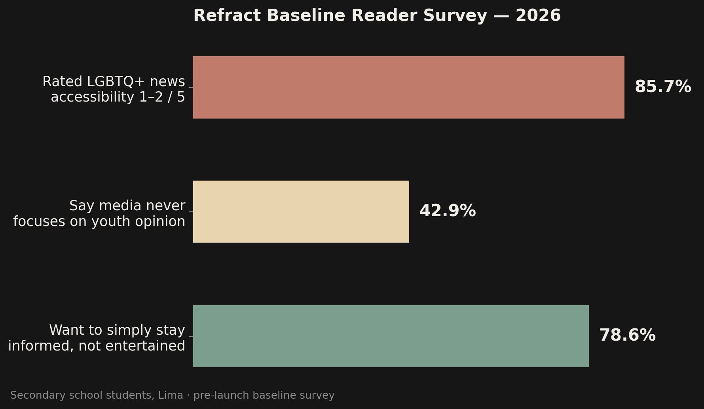
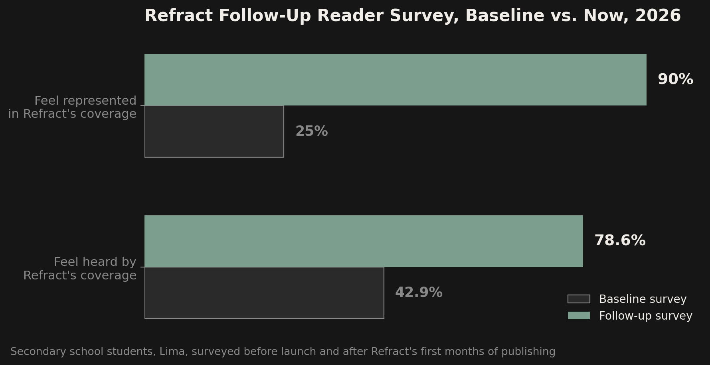

Original research, primary source documents, video investigations, and survey results — available to approved readers only. Apply below.

🔒 Approved readers onlyThe baseline survey that shaped what Refract became, before a single article was published.

🔒 Approved readers onlyThe same students, months later. What changed after Refract's first stretch of publishing.
Refract's Investigations section contains original research, survey data, primary source documents, and video investigations that require editorial review before access is granted. This protects sources and ensures content reaches the right audience.
Before Refract published a single article, the team ran a baseline survey of secondary school students in Lima to test two assumptions behind the whole project: that young people felt ignored by mainstream media, and that LGBTQ+ news specifically was hard to find in the first place. The survey wasn't a formality — it directly shaped what Refract became.
The baseline survey told Refract what to build. This one asked whether building it made any difference. The team went back to the same population, students, months later, after Refract's first stretch of publishing, and asked the same questions again.